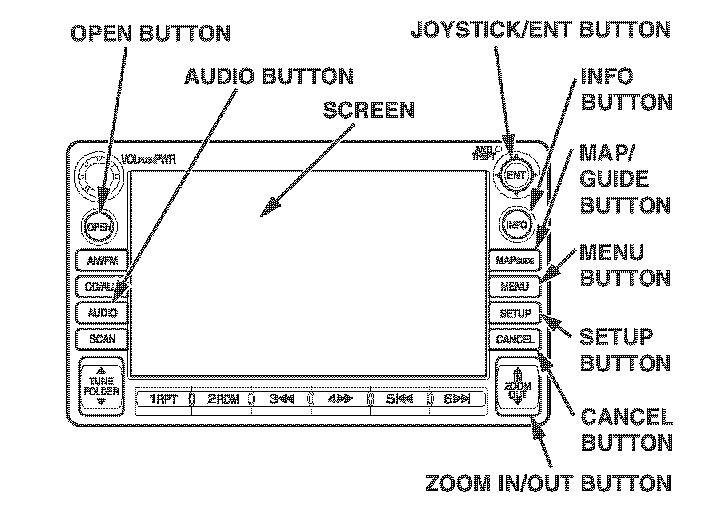
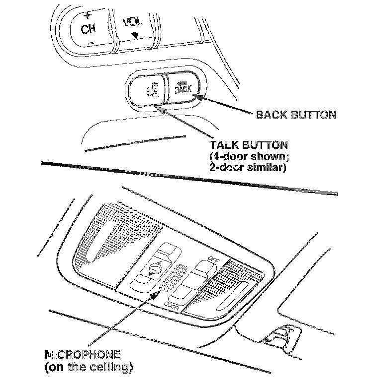
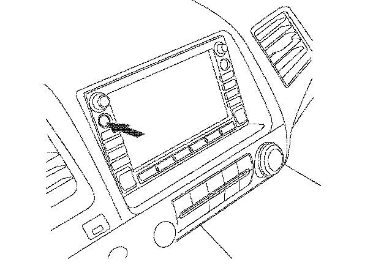
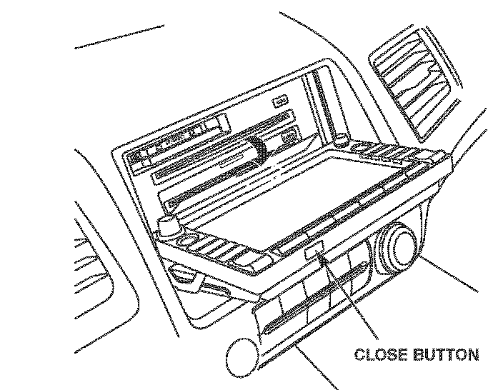
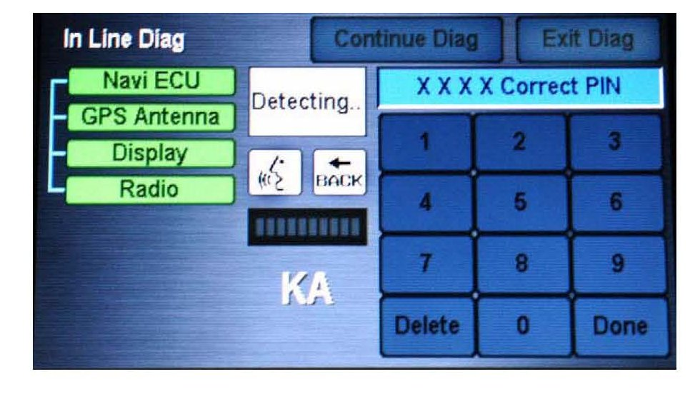
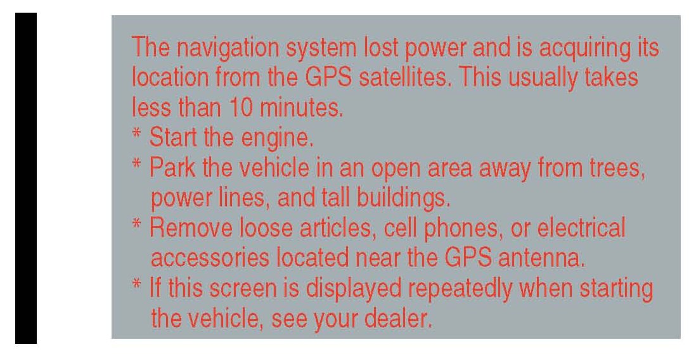
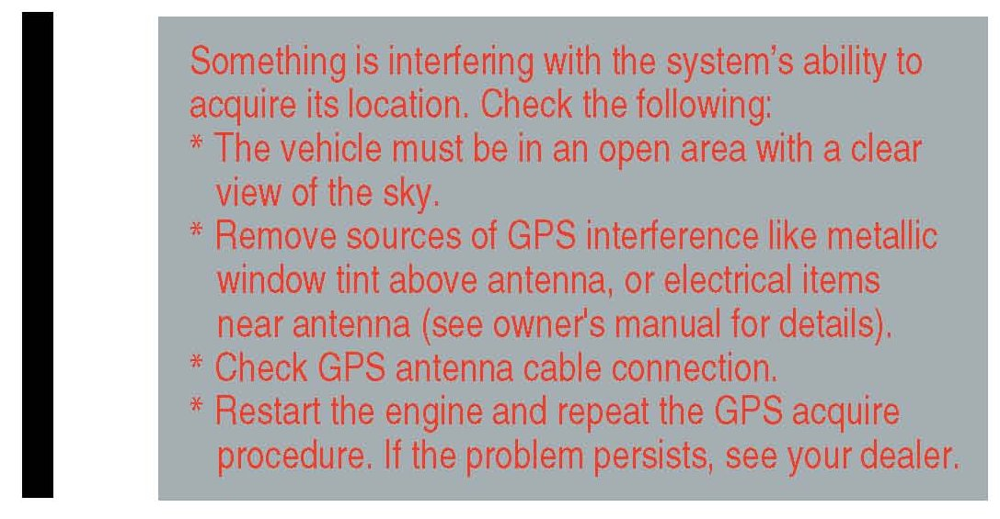

Navigation System - Setup/Testing/Operation
05-044August 15, 2007
Applies To:
2006-08 Civic With Navigation - ALL
2006-08 Civic Hybrid With Navigation - ALL
2006-08 Civic: PDI of the DVD Navigation System With Voice Recognition
(Supersedes 05-044, dated August 31, 2006, to update the information marked with the black bars and asterisks.)
BACKGROUND
This bulletin provides information for the PDI (pre- delivery inspection), including testing of the navigation system. These topics are covered:
^ Navigation System Controls
^ Navigation DVD Installation
^ Navigation System Setup at PDI
^ Map Coverage Areas
^ Ordering a DVD
For more detailed information on system operation, refer to the navigation system manual.
WARRANTY CLAIM INFORMATION
None; these procedures are considered part of the normal PDI.

NAVIGATION SYSTEM CONTROLS
MAP/GUIDE button - Displays the map screen. When on a route, it switches between the map, guidance, and direction list screens.
CANCEL button - Cancels the current screen and returns you to the previous screen display.
Joystick/ENT - Moves left, right, up, and down. Used to move the highlighting around the display, to scroll through lists, or to look around a displayed map. After making a selection in a menu or list, push in on the joystick to enter the selection into the system. In almost all cases, you can enter a selection into the system by using the voice control system, highlighting the item, and pushing in on the joystick, or by touching the appropriate item on the screen you wish to select.
ZOOM IN / OUT buttons - ZOOM IN reduces the scale (showing less area with greater detail). ZOOM OUT increases the scale (showing more area with less detail).
MENU button - Displays the Enter destination by screen. When en route, displays Change route by screen.
INFO button - Displays the screen for selecting Voice Command Help, Map Legend, Calendar, and Calculator.
AUDIO button - Press to display the audio screen. For more information on audio system features, see the audio section of the owner's manual.
SETUP button - Displays the setup screens to change and update information in the system.
OPEN button - Tilts the screen down to access the CD player and the PC card slot. The navigation DVD is behind the plastic cover.
CLOSE button - Returns the screen to the original position.
Other buttons - See the audio section of the owner's manual.
Screen
All selections and instructions are displayed on the screen. In addition, the display is a ~ouch screen"; you can enter information into the system by touching the images (icons) on the screen with your finger. For example, if you need to enter a street name, a keyboard will be displayed. You can type in the street name by saying or selecting the individual characters on the screen.
Clean the screen with a soft damp cloth. You may use a mild cleaner intended for use on LCDs (liquid crystal displays). Harsher chemicals may damage the screen.
Voice Control System
Voice recognition is controlled by the TALK and BACK buttons. This is intended as the primary way to give commands to the system. Using the buttons and touching the screen allow the passenger to operate the system and should be considered a secondary method for the driver.
TALK button - Press and release this button to activate the voice control system. After pressing and releasing TALK, wait for the beep, and then speak the command.

BACK button - This does the same function as the CANCEL button. Press this button to return to the previous display. After the previous display appears, the system prompts you for a command, and then beeps. Press and release the TALK button to give the desired command.
Microphone - Receives voice commands. The navigation system communicates through the audio speakers. The navigation system gives guidance instructions through the front speakers. When you are using the voice control system to give commands (by pressing the TALK or BACK buttons), the front and rear speakers are muted. You can view or hear the voice command list by pressing the INFO button and selecting Voice Command Help. A tutorial is included that explains the operation of the voice control system. Refer to the quick start guide and the navigation system manual for detailed information.
To minimize distractions, always use the voice control system to operate the navigation system while driving. Always verify the audio and visual route information by carefully observing roadway signs, signals, etc. Use your own good judgment, and obey traffic laws while driving.
Improving Recognition
^ Make sure the airflow from the NC vents does not interfere with the system microphone in the ceiling console. Place your hand over the microphone; if you feel any airflow, adjust the vents.
^ Close the windows and the moonroof.
^ Set the fan speed to low (1 or 2).
^ Minimize background conversations and noise.
^ Make sure the correct screen is displayed for the voice command you are giving. Refer to the navigation system manual.
To help the system understand your voice commands, follow these guidelines:
^ After pressing the TALK button, wait for the beep, and then give a voice command.
^ Give a voice command clearly, in a natural speaking voice, without pausing between words.
NOTE:
^ If the system cannot recognize your voice command, speak louder.
^ If the microphone picks up voices other than yours, the system may misinterpret your voice commands.
^ If you speak a command with something in your mouth, or with a heavy accent, the system may misinterpret your voice commands.
NAVIGATION DVD INSTALLATION
The 2006-08 Civic navigation unit will not arrive with a pre-installed DVD like the navigation systems in other models. To install the DVD:
1. Install fuse No.23 (10 A) in the under-hood fusel relay box.
2. Locate the turquoise-colored navigation DVD stowed with the owner's manuals in the glove box. It is in a plastic jewel case.
NOTE:
This turquoise DVD is specific to the Civic and CR-V, and it will not work in any other vehicle. If you cannot find the turquoise navigation DVD, order a replacement DVD from the navigation DVD order site. See ORDERING A NAVIGATION DVD on page 6. For reimbursement of the replacement DVD cost, use the iN (Interactive Network) to file a warranty "transportation claim."
3. Start the engine.

4. Push the OPEN button to tilt down the screen.
NOTE:
Voice commands are disabled when the screen is tilted down.

5. While pressing the catch for the DVD cover, open the DVD cover by pulling down on it. Do not remove the cover.
6. Insert the turquoise-colored DVD, label side up, into the navigation DVD slot. The DVD will automatically be pulled into the unit.
7. Close the DVD cover.
8. Press the CLOSE button. The screen tilts up, and the navigation software loads automatically. This may take several minutes. At the Enter code screen, enter the 4-digit navigation code. (The code card with the 4-digit code is in the glove box.)
NOTE:
If the navigation display does not close completely, carefully check for objects lodged behind or under the display. Also check for a partially inserted CD or a PC Card adapter that is missing its memory chip.
NAVIGATION SYSTEM SETUP AT PDI
The navigation system interfaces with other systems in the vehicle. It is important to ensure that all of the systems are initialized so they will work properly for the customer. To initialize the system, follow this procedure:
1. Do the normal PDI of the vehicle, including the audio system and XM(R) Satellite Radio dealer service verification.
2. You could possibly see this navigation diagnostic screen below. If you see the screen, do this:
^ Press and hold the MENU, MAP/GUIDE, and CANCEL buttons at the same time until the Select diagnosis screen comes up. Then release the buttons.
^ Press and hold the Map/Guide button for at least 15 seconds.

^ Select Complete on the display, then select Return twice to exit the diagnostic mode.
3. Start the engine, and move the vehicle outside, away from buildings and power lines. Then enter the security code for the navigation system.
NOTE:
There are two code stickers and a plastic code card located in a small plastic bag in the glove box.
^ Attach one of the stickers to the code card, put it in the plastic bag, and return it to the glove box.
^ Attach the other sticker to the PDI repair order or put it in the plastic bag, and return it to the glove box for the customer.
NOTE:
Never attach a sticker to the side of the glove box or other location where both the serial number and code are easily visible. This defeats the purpose of the anti-theft protection.
If the card is lost, the navigation system serial number can easily be obtained without removing the navigation system. To get the code, do this:
^ Press and hold the MENU, MAP, and CANCEL buttons at the same time.
^ At the diagnosis menu, select Unit Check, then Navi ECU. The system runs a brief diagnostic, then the serial number is displayed at the bottom of the screen.
^ Use the navigation Anti-theft code inquiry option in the iN (Interactive Network) to look up the 4-digit navigation anti-theft code.
^ If the code does not work, call the warranty department.

4. The following instructions appear on the screen to indicate that the system is initializing (determining its location from the GPS satellites). Follow the on-screen instructions.
NOTE:
The average initialization takes about 10 minutes, but it can take as long as 45 minutes.

5. If the system does not initialize within 10 minutes, the screen shown below appears. The system is still initializing but will not automatically exit to the screen above when initialization is complete. Do not immediately follow the instructions on the screen. After 30 minutes, try restarting the vehicle to see if the navigation system completed the initialization. If not, follow the instructions on the screen.
NOTE:
^ Check the GPS antenna connection on the back of the navigation unit.
^ The initialization screen may appear after battery voltage to the navigation control unit has been disconnected for more than 5 minutes. If this happens, follow the on-screen instructions. If you are still unable to obtain GPS initialization, refer to the service manual for diagnostic information.
6. When initialization is complete, the disclaimer screen appears. Touch OK.
NOTE:
Do not enter a destination yet. In order for the navigation system to calculate a route, it must align the current location to a mapped road (map matching). This happens when you start driving.
7. Drive the vehicle at least a half-mile from your dealership, then find a safe place to park.
^ Make sure the VP (vehicle position) icon moves smoothly as you drive and does not jerk from one point to another. Also make sure the icon points in the direction the vehicle is traveling; it does not "dog track" or spin.
^ Make sure the VP icon smoothly follows the vehicles maneuvers as you make turns.
^ After driving a few hundred feet, the name of the road you are driving on should appear on the bottom of the screen.
8. With the map screen displayed, press and release the TALK button.
9. When you hear the beep, say "Find the nearest Honda dealer." The system should display a list of Honda dealers.
10. Use the joystick to select your dealership by highlighting it, then pushing in on the joystick.
11. On the Calculate Route to screen, select OK.
12. The system then calculates a route and displays it as a blue line. If you are in a rural area with unverified roads, you may see a blue vector line pointing in the direction of your destination or a blue/pink dotted line.
13. Follow the voice guidance back to your dealership. The voice guidance should work even with the audio system turned off.
14. With the map screen displayed, check the system interaction with the audio system. For models with an installed XM radio unit, press and release the TALK button. After the beep, say "XM channel 122." The audio display should change to XM radio channel 122, and show CNN.
For models not equipped with XM radio, press and release the TALK button. After the beep, say "Radio 95.5." The audio display should change to the radio station 95.5, and show 95.5.
15. For Hybrid models only: With the map screen displayed, check the system interaction with the climate control system. Press and release the TALK button. After the beep, say Temperature 68 degrees." The climate control system display should change to 68 degrees.
16. The time shown by the system should be correct; the system gets it from the GPS satellites. Depending on the location of your dealership, you may have to adjust the time settings.
^ If you live in a state or part of the state that does not use Daylight Saving Time, select Setup. Select More, then select Clock Adjustment. Set Auto Daylight Savings Time to OFF.
^ If your dealership is located near a time zone boundary, set Auto Time Zone by GPS to OFF. The clock then keeps the "home" time if the customer routinely drives across the time zone boundary.
17. Turn the headlights on and off to verify that the display dims with the headlights on. If not, select Setup, and set the display mode to AUTO.
18. Select Setup, or use the voice control system and say "Setup." Then verify these settings by touch or with the joystick:
^ Volume is set to midrange.
^ Brightness is set so the display can be seen in bright sunlight.
19. In Setup, select More, then Personal Information, then Previous Destinations. Follow the screen prompts to delete all previous destinations except your dealership.
20. Return to the main menu, then clean the screen with a soft, damp cloth. You may use a mild cleaner intended for eyeglasses or computer screens. Harsher chemicals may damage the screen.
NOTE:
Do not use shop towels, paper towels, or tissues; they can scratch or damage the screen.
System Limitations
These issues could arise during PDI, or after installing replacement parts to repair the system. Refer to the navigation system manual or the quick start guide for basic operation.
The navigation system has these limitations:
^ The GPS satellites used by the navigation system are operated by the U.S. Department of Defense. For security reasons, certain inaccuracies are built into the GPS. This can cause occasional positioning errors of up to several hundred feet. If the navigation system indicates your position incorrectly, wait several seconds until it corrects itself. The system may also correct itself after you make a turn or cross a road.
^ The routes calculated by the system may not always be what you consider to be the most direct ones. Try different routing methods to obtain the best route. Even the direction your vehicle is pointing influences the route calculation.
^ Since businesses close or relocate, some information may be inaccurate. Also, route guidance may conflict with actual road conditions such as street closures, construction, and detours.
^ Occasionally, the navigation system may "reboot" due to excess cold, heat, or shock, or from recalculating a route too many times. Rebooting does not necessarily indicate a need for service.
^ The GPS antenna receives location information from orbiting satellites. Anything that blocks or interferes with the signal will affect accuracy. The GPS signal can be blocked or interfered with (vehicle position shown incorrectly on the map) by:
- Aftermarket metallic window tinting above or to the sides of the GPS antenna.
- Aftermarket vehicle tracking systems mounted near the navigation control unit or display.
- Radar detectors, cell phones, or other aftermarket electronic accessories placed near the navigation control unit or display.
- Outside electrical interference from overhead power lines or broadcast sources.
- Tall trees or buildings near or over the vehicle. They can cause the system to show the vehicle on an adjacent street. This should automatically correct itself when the obstruction is gone.
^ In some cases, a city name, road name, or address range may be incorrect or missing from the system. The possible causes are:
- The city name may be listed under a larger metropolitan area or as an "unincorporated" area. Try selecting the street name first. If it is a smaller city in a rural area, only the main road may be shown.
- If the street name cannot be found, is shown incorrectly on the map, or is not drawn correctly, it may be because it is a new road, or it is in an "unverified" area.
^ If the location of your dealership is shown incorrectly or needs to be changed, report it to your service manager or DPSM. The reporting form is on ISIS.
^ If, for any reason, the DVD cover is opened and the DVD removed/re-inserted, the system will reboot and may require the 4-digit security code. A DVD with a turquoise label is used for this system. It cannot be interchanged with a DVD from a different vehicle that has a different-colored label.
MAP COVERAGE AREAS
The map database covers the 48 contiguous U.S. states and parts of Canada. The map coverage for the U.S. contains accurately mapped (verified) metropolitan areas and less accurate (unverified) rural coverage. In Canada, the database covers major metropolitan areas and major roads connecting those metropolitan areas. Coverage extends to about 100 miles from the U.S. border. A gray DVD that provides coverage of northern Canada is available (see ORDERING A DVD).
Map Types
The maps that you view on the screen have two types of roads: verified roads and unverified roads.
Verified roads have been driven by the database vendor. Information about the road's average speed, turn restrictions, or whether it is a one-way street are contained in the navigation system. Roads within metropolitan areas (detailed coverage), interstate freeways, and major roads connecting cities are typically verified. They are seen on the screen (daytime setting) as the darker-colored roads.
Unverified roads may be found in rural areas. Because information about these roads may have inaccuracies, they are shown for reference only. They can be recognized on the screen (daytime setting) as the light brown colored roads.
Guidance in unverified areas depends on the setting for unverified routing made during setup. If the setting is OFF, you will see a dotted blue vector line pointing to your destination when driving in an unverified area. You will have to manually choose roads from the map to get to your destination. If the setting is ON, then you will see a blue/pink route line and receive route guidance. Pop-up cautionary boxes appear while on the route to alert you when entering unverified areas.
NOTE:
The unverified routing feature is set to OFF from the factory.
Detailed Coverage
Many cities and metropolitan areas are fully mapped.
Detailed map coverage includes:
^ Roads with names
^ Service roads without names that serve as access to rest areas along motorways
^ Main paved roads without names that are within, or lead to included polygons (places such as large shopping centers, universities, golf courses, parks, etc.)
^ Paved roads without names that are used only by public vehicles
^ Ferry connections for automobiles via rail or boat
^ Walkways with names and addresses
^ Undefined traffic areas with more than 10,800 square feet
^ Ramps, roundabouts, special traffic figures, turn lanes, and U-turn lanes
^ Service roads
^ Pedestrian streets and pedestrian zones For a list of current detailed coverage areas by country and state/province, refer to the navigation system manual for the current model year, or the Web site.
Non-Detailed Coverage
Cities and towns in the non-detailed map coverage area may have incomplete mapping. Only major federal, state, and county roads leading to and through these cities and towns are mapped. These verified roads are shown in black. All other streets are unverified, and are shown in light brown. If you see an asterisk (*) next to the city name:
^ Streets may be missing completely or shown in the wrong location.
^ Street address information may be unavailable, and you may be prompted to use the map to locate your destination.
^ Streets may be either named incorrectly or have no names (unnamed road).
Guidance in unverified areas depends on the setting for Unverified routing made during setup. See ~Driving to your destination" in the navigation system manual for more information.
*ORDERING A DVD
Replacement DVDs can be ordered online at Select Order Navigation DVD.
You can also call the Honda Navigation Disk Fulfillment Center. Both methods require a credit card.
The DVD for this model has a turquoise label and cannot be ordered through the parts system. The following DVDs will not work in this navigation system:
^ Earlier model navigation DVDs (black label)
^ Map software programs manufactured by other companies
^ DVD movies or DVDs containing audio recordings Updated DVDs are usually available for purchase in
the fall of each year. They may contain the following:
^ Enhanced maps and points of interest (P01) coverage
^ Fixes for minor software bugs
^ Additional features
NOTE:
^ Map matching must be done any time the DVD is removed or replaced. This consists of driving the vehicle on a mapped road until the road name is displayed at the bottom of the map screen.
^ Always order navigation DVDs on an as-needed basis. During a typical model year, each color DVD may undergo half a dozen "software-only" version upgrades to fix minor issues on some or all models the DVD supports. This is normal. Usually, only the letter at the end of the version number changes, while the database (maps and POIs) remains unchanged.
^ Never promise customers future free updates. There are no free programs for updating the navigation DVD. The online DVD order site provides information when an update for a particular DVD is available.
^ Damaged discs are not covered by warranty unless the disc is damaged by the navigation unit.*

Disclaimer